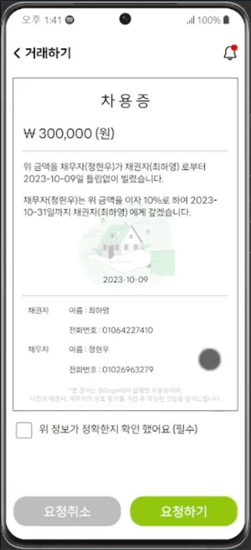

Backend / Service Integration
Billage
차용증 생성부터 송금·상환 내역 관리까지 연결한 개인 간 금전거래 서비스입니다. 외부 API 이용 제약에 대응해 금융 연동 환경을 모의 구현했습니다.



해결할 문제
개인 간 거래에서 여러 계좌의 입출금을 일일이 확인해야 하는 불편을 줄이고자 했습니다. 팀은 계좌별 조회를 계약 단위의 송금·상환 관리로 연결하는 서비스를 만들었습니다.
본인 역할
팀장으로 기획과 발표를 맡고 백엔드·인프라를 담당했습니다. 차용증 생성과 거래 내역 관리에 필요한 서비스 흐름과 금융 연동 환경을 다뤘습니다.
설계 선택
외부 금융 API를 자유롭게 사용할 수 없는 제약에 대응해 은행·오픈뱅킹·마이데이터 서비스를 모의 구현했습니다. MSA 구조에서 서비스별 역할을 나누고 컨테이너로 실행 환경을 구성했습니다.
서비스 간 통신
Spring WebClient·WebFlux로 서비스 간 요청·응답과 비동기 처리 흐름을 구현했습니다. 은행 간 정보 공유와 거래 처리 순서를 살피며 연동 과정의 문제를 다뤘습니다.